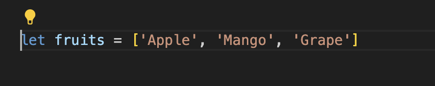
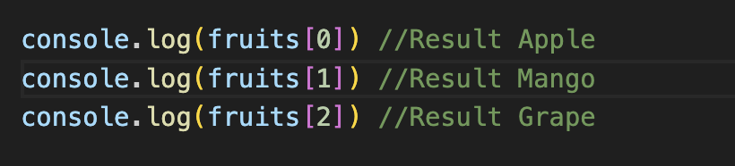
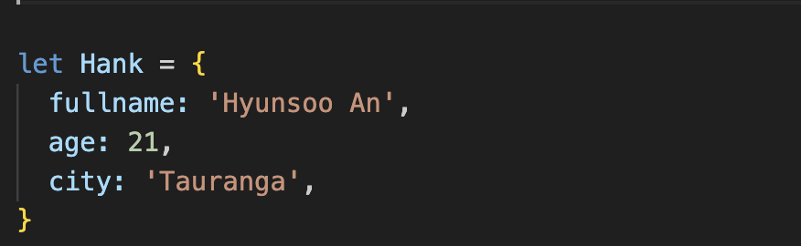
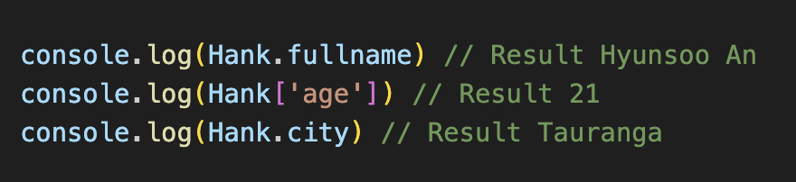

HTML defines the basic structure of a web page, acting like its skeleton. CSS, on the other hand, adds style and appearance, akin to its skin and blood. However, these elements alone do not make a web page dynamic or interactive. This is where JavaScript comes into play.
Taking an example from preparing for a trip: Control flow represents the step-by-step progression of travel preparation. Examples include planning a trip, choosing dates, booking airline tickets, and reserving a hotel. Each step cannot begin until the previous step is complete. Just as I decide how to travel based on the location of the hotel I booked and travel plans, each step progresses to the next depending on whether the previous step has been completed.
Taking an example of the process of organizing things: A loop is a process that performs repetitive tasks. For example, when organizing my closet, gathering and folding clothes of the same type is a repetitive task. Fold pants and shirts the same way I fold tops. This process is repeated repeatedly until the desired result is done.
DOM (Document Object Model) is a structural representation of web documents also display the HTML document of a web page in a tree form. It serves as an interface that allows programming languages to access and manipulate objects within a web page. It is mainly used in Javescript to select, modify, and or remove elements on a web page.
Things you can do with Javescript through DOM:
An array is an ordered list, and each element is accessed using an index (a number). The index of an array starts at 0.
To access data in an array, use the index.
An object is a collection of key-value pairs, and each value is accessed using a unique key (a string). Objects are unordered, and you use keys to store and retrieve data.
To access data in an object, use the key.
Objects allows to access values using keys, making it easy to search for data regardless of order.
A function is an independently defined block of code that performs a specific task. Functions have several important functions and contribute greatly to making your code more efficient and readable.
Eliminating Redundant Code: Instead of writing the same code multiple times, you can define it once using functions and reuse it.
Logical Code Segmentation: You can break down large tasks into smaller logical units. For example, you can split the user login process into multiple functions: input validation, authentication, session setup, etc.
Ease of Debugging and Testing: Since you can test functions individually, it becomes easier to find and fix errors.
Flexibility and Scalability: Using functions makes it easier to extend or modify code. When adding new features, there's often no need to significantly change existing code.